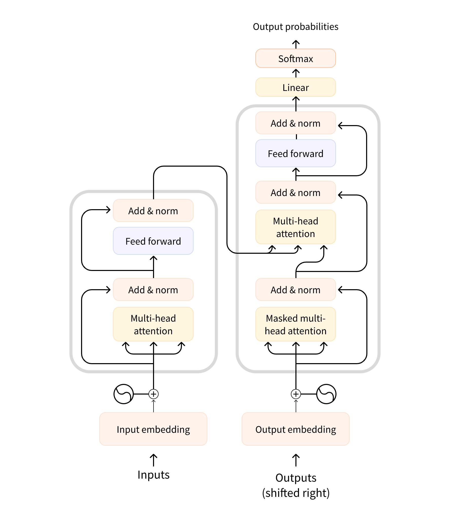

迁移学习
按模型结构将它们大致分为三类：
纯 Encoder 模型 （例如 BERT），又称自编码 (auto-encoding) Transformer 模型；适用于只需要理解输入语义的任务，例如句子分类、命名实体识别；纯 Decoder 模型 （例如 GPT），又称自回归 (auto-regressive) Transformer 模型；适用于生成式任务，例如文本生成；Encoder-Decoder 模型 （例如 BART、T5），又称 Seq2Seq (sequence-to-sequence) Transformer 模型。适用于需要基于输入的生成式任务，例如翻译、摘要。
两个常用的预训练任务：
但是如果直接拿来完成特定任务，效果往往并不好。因此，通常采用迁移学习 (transfer learning) 方法，使用特定任务的标注语料，以有监督学习 微调 (fine-tune)
预训练是一种从头开始训练模型的方式：所有的模型权重都被随机初始化 ，然后在没有任何先验知识的情况下开始训练。这个过程不仅需要海量的训练数据，而且时间和经济成本都非常高。
因此，大部分情况下，是将别人预训练好的模型权重通过迁移学习应用到 --》 自己的模型中（二次训练，微调参数 Fine-tuned language model）
注意力层
注意力层的作用就是让模型在处理文本时，将注意力只放在某些词语上
在训练过程中，Encoder 接受源语言的句子作为输入，而 Decoder 则接受目标语言的翻译作为输入

首先对句子进行分词，然后将每个词语 (token) 都转化为对应的词向量 (token embeddings)，这样文本就转换为一个由词语向量组成的矩阵\(\boldsymbol{X} = (x_1, x_2, ..., x_n)\) ，其中其中$ x_i $就表示第 \(i\) 个词语的词向量，维度为 \(d\) ，故\(\boldsymbol{X} \in \mathbb{R}^{n×d}\) 。
每一个词语 \(x_t\) 对应的编码结果\(y_t\) :
RNN ：通过递归计算：\(y_t =f(y_{t-1}, x_t)\) ，递归就导致了他无法并行计算，需要逐步递归才能获得全局信息，因此一般使用的是双向RNN
CNN ：通过滑动窗口基于局部上下文来编码文本，例如核尺寸为 3 的卷积操作就是使用每一个词自身以及前一个和后一个词来生成嵌入式表示，\(y_t =f(x_{t-1}, x_t, x_{t+1})\) ，可以并行计算，但是更侧重于局部信息，需要层叠增大感受野
Transform ：\(y_t = f(x_t, A, B)\) ，其中 \(A,B\) 是另外的词语序列（矩阵），如果取\(A=B=X\) 就称为 Self-Attention，即直接将 \(x_t\) 与自身序列中的每个词语进行比较，最后算出 \(y_t\) 。
虽然 Attention 有许多种实现方式，但是最常见的还是 Scaled Dot-product Attention。
主要步骤：
计算注意力权重 ：使用某种相似度函数度量每一个 query 向量和所有 key 向量之间的关联程度。对于长度为 m 的 Query 序列和长度为 n 的 Key 序列，该步骤会生成一个尺寸为 m×n 的注意力分数矩阵。
Scaled Dot-product Attention 使用点积 作为相似度函数，这样相似的 queries 和 keys 会具有较大的点积。由于点积可以产生任意大的数字，这会破坏训练过程的稳定性 。因此注意力分数还需要乘以一个缩放因子来标准化它们的方差 ，然后用一个 softmax 标准化。这样就得到了最终的注意力权重 \(w_{ij}\) ，表示第$ i$ 个 query 向量与第 \(j\) 个 key 向量之间的关联程度。
更新 token embeddings ：将权重 \(w_{ij}\) 与对应的 value 向量 \(v_1,…,v_n\) 相乘以获得第 \(i\) 个 query 向量更新后的语义表示 \(x_i'=∑_j w_{ij} v_j\) 。
\[
\text{Attention} (Q, K, V) = softmax(\frac{QK^T}{\sqrt{d_k}}) V
\]
其中 \(Q \in \mathbb{R}^{m×d_k},K \in \mathbb{R}^{n×d_k},V \in \mathbb{R}^{n×d_v}\) , 其实就是 \(m \times d_k,d_k \times n, n \times d_v\) 矩阵相乘 => \(m \times d_v\) \[
\text{Attention} (q_t, K, V) = \sum \limits_{s=1}^n \frac{1}{Z} exp(\frac{<q_r k_s>}{\sqrt{d_k}}) v_s
\] 其中 \(Z\) 是归一化因子，\(K,V\) 是一一对应的 key 和 value 向量序列，Scaled Dot-product Attention 就是通过 \(q_t\) 这个 query 与各个 \(k_s\) 内积，并 softmax 的方式来得到 \(q_t\) 与各个 \(v_s\) 的相似度 ，然后加权求和，得到一个 \(d_v\) 维的向量。其中因子$ $ 起到调节作用，使得内积不至于太大。
1 2 3 4 5 6 7 8 9 10 11 12 13 import torchimport torch.nn.functional as Ffrom math import sqrtdef scaled_dot_product_attention (query, key, value, query_mask=None , key_mask=None , mask=None ): dim_k = query.size(-1 ) scores = torch.bmm(query, key.transpose(1 , 2 )) / sqrt(dim_k) if query_mask is not None and key_mask is not None : mask = torch.bmm(query_mask.unsqueeze(-1 ), key_mask.unsqueeze(1 )) if mask is not None : scores = scores.masked_fill(mask == 0 , -float ("inf" )) weights = F.softmax(scores, dim=-1 ) return torch.bmm(weights, value)
注意！上面的做法会带来一个问题：当 Q 和 K 序列相同时，注意力机制会为上下文中的相同单词分配非常大的分数（点积为 1），而在实践中，相关词往往比相同词更重要。例如对于上面的例子，只有关注“time”和“arrow”才能够确认“flies”的含义。
因此，多头注意力 (Multi-head Attention) 出现了！
代码部分
Embedding
1 2 3 4 5 6 7 8 9 10 11 12 13 14 15 16 17 import torchfrom torch import nnclass tokenEmbedding (nn.Embedding): def __init__ (self, vocab_size, embedding_dim ): super (tokenEmbedding, self ).__init__(vocab_size, embedding_dim, padding_idx=1 ) vocab_size = 1000 embedding_dim = 200 embedding_layer = tokenEmbedding(vocab_size, embedding_dim) input_indices = torch.tensor([1 ,2 ,3 ], dtype = torch.long) embedded_vectors = embedding_layer(input_indices) print (embedded_vectors)
embedding_layer有一个可学习的参数，既嵌入矩阵weight ，shape=(vocab_size, embedding_dim)。每一行代表词汇表中一个元素的向量表示（所以直接查表就能得到 \((n,d_{embed})\) 的矩阵）。
Positional Embedding
1 2 3 4 5 6 7 8 9 10 11 12 13 14 15 16 17 18 19 20 21 22 23 24 25 26 27 28 29 30 class PositionalEncoding (nn.Module): def __init__ (self, d_embed, max_len, device ): """ :param d_embed: input_embedding的维度 :param max_len: 输入序列的最大长度 :param device: hardware device setting """ super (PositionalEncoding, self ).__init__() self .encoding = torch.zeros(max_len, d_embed, device=device) self .encoding.requires_grad = False pos = torch.arange(0 , max_len, device=device) pos = pos.float ().unsqueeze(dim=1 ) _2i = torch.arange(0 , d_embed, step=2 , device=device).float () self .encoding[:, 0 ::2 ] = torch.sin(pos / (10000 ** (_2i / d_embed))) self .encoding[:, 1 ::2 ] = torch.cos(pos / (10000 ** (_2i / d_embed))) def forward (self, x ): batch_size, seq_len = x.size() return self .encoding[:seq_len, :]
Self.encoding是一个矩阵类似于：
有上面两个就可以得到transform embedding为：
1 2 3 4 5 6 7 8 9 10 11 12 13 14 15 16 17 18 19 20 21 class TransformerEmbedding (nn.Module): """ token embedding + positional encoding (sinusoid) positional encoding can give positional information to network """ def __init__ (self, vocab_size, d_embed, max_len, drop_prob, device ): """ :param vocab_size: size of vocabulary :param d_model: dimensions of model """ super (TransformerEmbedding, self ).__init__() self .device = device self .tok_emb = TokenEmbedding(vocab_size, d_embed) self .pos_emb = PositionalEncoding(d_embed, max_len, device) self .drop_out = nn.Dropout(p=drop_prob) def forward (self, x ): tok_emb = self .tok_emb(x).to(self .device) pos_emb = self .pos_emb(x) return self .drop_out(tok_emb + pos_emb)
WordEmbedding 深度解析
这部分WordEmbedding的代码实践！首先导入相关库：
1 2 3 4 5 6 7 8 9 10 11 12 import torchimport torch.nn as nnfrom torch.optim import Adamfrom torch.distributions.uniform import Uniformfrom torch.utils.data import TensorDataset, DataLoaderimport lightning as Limport pandas as pdimport matplotlib.pyplot as pltimport seaborn as sns
主要思想就是，首先需要对输入的句子：“Troll2 is great”和“Gymkata is great” token化，也就是先做个one-hot编码。总共四个不一样的单词，所以onehot编码为4*4方格。Troll2 的编码为[1,0,0,0]，经过神经网络之后，理想的输出是[0,1,0,0]，也就是输出is 的onehot编码。所以由此可以构造出input和output
下面是复杂版本的代码，没有使用nn.Linear()简化的代码，相对来说比较杂乱。
1 2 3 4 5 6 7 8 9 10 11 12 13 14 15 16 17 18 19 20 21 22 23 24 25 26 27 28 29 30 31 32 33 34 35 36 37 38 39 40 41 42 43 44 45 46 47 48 49 50 51 52 53 54 55 56 57 58 59 60 61 62 63 64 65 66 67 68 69 70 71 72 73 74 75 76 77 78 79 80 intputs = torch.tensor([[1. ,0. ,0. ,0. ], [0. ,1. ,0. ,0. ], [0. ,0. ,1. ,0. ], [0. ,0. ,0. ,1. ]]) labels = torch.tensor([[0. ,1. ,0. ,0. ], [0. ,0. ,1. ,0. ], [0. ,0. ,0. ,1. ], [0. ,1. ,0. ,0. ]]) dataset = TensorDataset(intputs, labels) dataLoader = DataLoader(dataset) class WordEmbeddingFromScratch (L.LightningModule): def __init__ (self ): super ().__init__() min_value = -0.5 max_value = 0.5 self .input1_w1 = nn.Parameter(Uniform(min_value, max_value).sample()) self .input1_w2 = nn.Parameter(Uniform(min_value, max_value).sample()) self .input2_w1 = nn.Parameter(Uniform(min_value, max_value).sample()) self .input2_w2 = nn.Parameter(Uniform(min_value, max_value).sample()) self .input3_w1 = nn.Parameter(Uniform(min_value, max_value).sample()) self .input3_w2 = nn.Parameter(Uniform(min_value, max_value).sample()) self .input4_w1 = nn.Parameter(Uniform(min_value, max_value).sample()) self .input4_w2 = nn.Parameter(Uniform(min_value, max_value).sample()) self .output1_w1 = nn.Parameter(Uniform(min_value, max_value).sample()) self .output1_w2 = nn.Parameter(Uniform(min_value, max_value).sample()) self .output2_w1 = nn.Parameter(Uniform(min_value, max_value).sample()) self .output2_w2 = nn.Parameter(Uniform(min_value, max_value).sample()) self .output3_w1 = nn.Parameter(Uniform(min_value, max_value).sample()) self .output3_w2 = nn.Parameter(Uniform(min_value, max_value).sample()) self .output4_w1 = nn.Parameter(Uniform(min_value, max_value).sample()) self .output4_w2 = nn.Parameter(Uniform(min_value, max_value).sample()) self .loss = nn.CrossEntropyLoss() def forward (self, input ): input = input [0 ] input_to_top_hidden = ((input [0 ] * self .input1_w1) + (input [1 ] * self .input2_w1) + (input [2 ] * self .input3_w1) + (input [3 ] * self .input4_w1)) input_to_bottom_hidden = ((input [0 ] * self .input1_w2) + (input [1 ] * self .input2_w2) + (input [2 ] * self .input3_w2) + (input [3 ] * self .input4_w2)) output1 = (input_to_top_hidden * self .output1_w1 + input_to_bottom_hidden * self .output1_w2) output2 = (input_to_top_hidden * self .output2_w1 + input_to_bottom_hidden * self .output2_w2) output3 = (input_to_top_hidden * self .output3_w1 + input_to_bottom_hidden * self .output3_w2) output4 = (input_to_top_hidden * self .output4_w1 + input_to_bottom_hidden * self .output4_w2) output_presoftmax = torch.stack([output1, output2, output3, output4]) return output_presoftmax def configure_optimizers (self ): return Adam(self .parameters(), lr = 0.1 ) def training_step (self, batch, batch_idx ): intput_i, label_i = batch output_i = self .forward(intput_i) loss = self .loss(output_i, label_i[0 ]) return loss modelFromScratch = WordEmbeddingFromScratch() print ("Before optimization, the parameters are ..." )for name, param in modelFromScratch.named_parameters(): print (name, param.data)
输出结果为：
input1_w1 tensor(0.4502) ...
output4_w1 tensor(-0.4579)
output4_w2 tensor(0.3754)
为了更好的查看w1和w2进行下面的操作，【表格展示和图表展示】
1 2 3 4 5 6 7 8 9 10 11 12 13 14 15 16 17 18 19 20 21 22 23 24 25 26 27 28 29 30 31 32 33 34 35 36 37 38 39 40 41 42 43 44 45 46 data = { "w1" : [modelFromScratch.input1_w1.item(), modelFromScratch.input2_w1.item(), modelFromScratch.input3_w1.item(), modelFromScratch.input4_w1.item()], "w2" : [modelFromScratch.input1_w2.item(), modelFromScratch.input2_w2.item(), modelFromScratch.input3_w2.item(), modelFromScratch.input4_w2.item()], "token" : ["Troll2" , "is" , "great" , "Gym" ], "input" : ["input1" ,"input2" ,"input3" ,"input4" ] } df = pd.DataFrame(data=data) print (df)sns.scatterplot(df, x ="w1" , y= "w2" ) plt.text(df.w1[0 ], df.w2[0 ],df.token[0 ], horizontalalignment = "left" , size = "medium" , color = "black" , weight = "semibold" ) plt.text(df.w1[1 ], df.w2[1 ],df.token[1 ], horizontalalignment = "left" , size = "medium" , color = "black" , weight = "semibold" ) plt.text(df.w1[2 ], df.w2[2 ],df.token[2 ], horizontalalignment = "left" , size = "medium" , color = "black" , weight = "semibold" ) plt.text(df.w1[3 ], df.w2[3 ],df.token[3 ], horizontalalignment = "left" , size = "medium" , color = "black" , weight = "semibold" ) plt.show() trainer = L.Trainer(max_epochs=100 ) trainer.fit(modelFromScratch, train_dataloaders=dataLoader)
可视化结果如下，当然每次的结果都应该是不一样的：
w1
w2
token
input
w1'
w2'
0
0.115312
-0.237109
Troll2
input1
-1.538855
-1.861845
1
0.127418
0.372505
is
input2
-2.131814
1.852834
2
0.253114
0.034632
a
input3
2.612083
0.616395
3
-0.067604
-0.073453
Gymkata
input4
-1.189931
-2.070752
接下来通过nn.Linear()函数对model进行简化：
1 2 3 4 5 6 7 8 9 10 11 12 13 14 15 16 17 18 19 20 21 22 23 24 25 26 27 class WordEmbeddingWithLinear (L.LightningModule): def __init__ (self ): super ().__init__() self .input_to_hidden = nn.Linear(in_features=4 , out_features=2 , bias=False ) self .hidden_to_output = nn.Linear(in_features=2 , out_features=4 , bias=False ) self .loss = nn.CrossEntropyLoss() def forward (self, input ): hidden = self .input_to_hidden(input ) output_values = self .hidden_to_output(hidden) return output_values def configure_optimizers (self ): return Adam(self .parameters(), lr = 0.1 ) def training_step (self, batch, batch_idx ): input_i, label_1 = batch output_i = self .forward(input_i) loss = self .loss(output_i, label_1) return loss modelLinear = WordEmbeddingWithLinear() data = { "w1" : modelLinear.input_to_hidden.weight.detach()[0 ].numpy(), "w2" : modelLinear.input_to_hidden.weight.detach()[1 ].numpy(), "token" : ["Troll2" , "is" , "great" , "Gym" ], "input" : ["input1" ,"input2" ,"input3" ,"input4" ] }
在之后的话就是需要使用nn.Embedding对训练出来的参数进行使用了
1 2 word_embeddings = nn.Embedding.from_pretrained(modelLinear.input_to_hidden.weight.T) word_embeddings.weight


{kind=link}